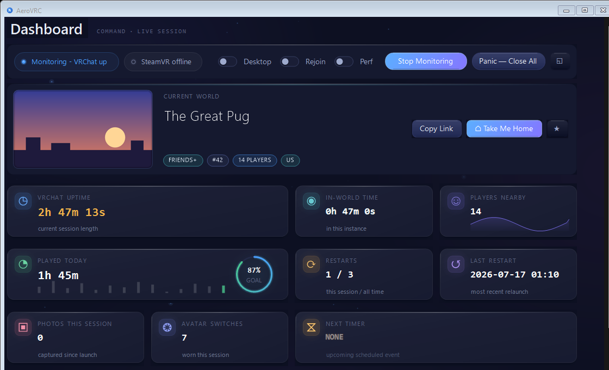
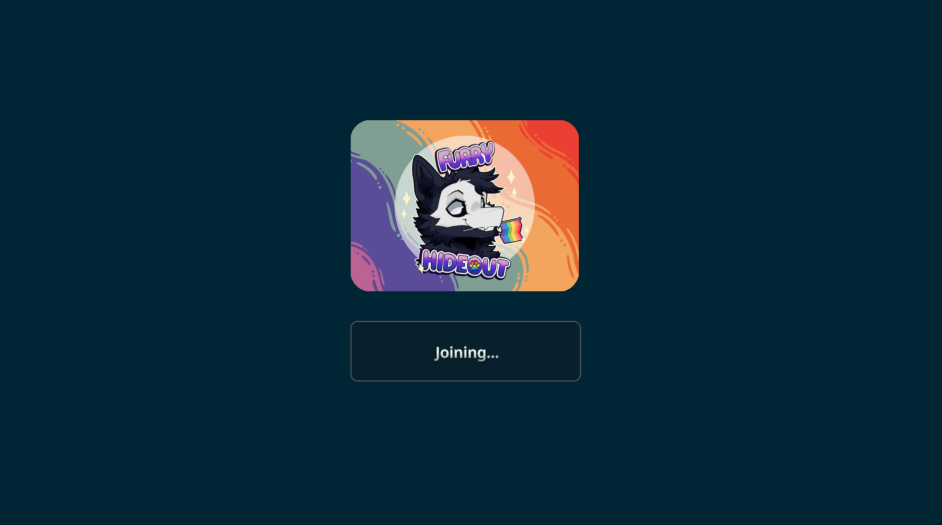

AeroVRC watches VRChat and revives it the moment it crashes — plus a live dashboard of your world, your frame times, and who’s in the instance, all in one clean app.
Portable .exe — no installer, no admin required to run
·
·


New here? Download, run and start monitoring in about two minutes.
The crash watchdog, live dashboard, app launcher, stats, VRCX integration and more.
Real screens from every page of the app, in one interactive gallery.
Grab the free, portable build for Windows and see the system requirements.
Every release and its notes, pulled live from GitHub — newest first.
Is it safe? Does it cost anything? Why does Windows warn me? Answered here.
Send a bug report or feature request straight to the developer.